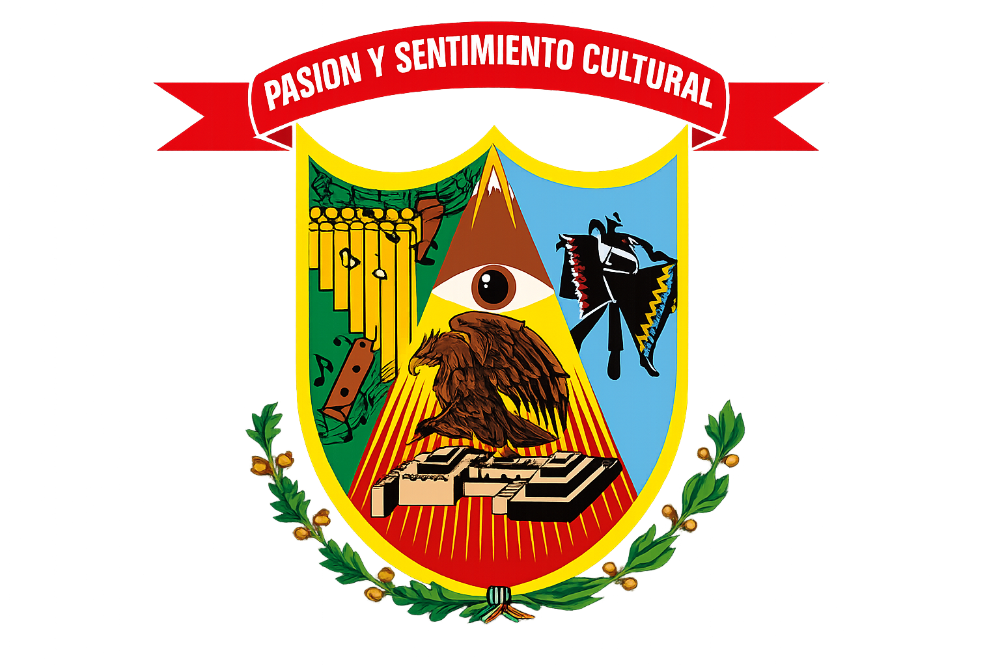

Organización
Personas, áreas e instituciones que hacen posible el concurso.
Grupo Folklórico
Pasión y Sentimiento Cultural
Jóvenes cataquenses comprometidos con la danza, la identidad y la difusión de nuestras tradiciones.
El Concurso de Danzas y Estampas Folclóricas “Catacaos, Color y Tradición” es organizado por el Grupo Folklórico Pasión y Sentimiento Cultural, agrupación nacida en Catacaos y comprometida con la preservación, promoción y difusión del folclore peruano.
Desde sus primeras ediciones, PySC ha trabajado con entusiasmo para convertir este concurso en un espacio donde agrupaciones, danzantes y público se reúnen para celebrar la riqueza cultural de nuestro país.
Cada edición representa meses de coordinación, planificación y trabajo conjunto para ofrecer una experiencia ordenada, segura y memorable.

Compromiso cultural
Promover el folclore peruano y fortalecer el sentido de identidad en las nuevas generaciones.
Trabajo comunitario
Impulsar un evento que une a artistas, familias, agrupaciones e instituciones culturales.
Proyección
Consolidar el concurso como uno de los eventos culturales más representativos de la región.
Coliseo Eriberto Pirilo Gómez
El concurso se realiza en Catacaos, distrito reconocido por su riqueza cultural, sus tradiciones y su profundo vínculo con el arte popular.
Catacaos, Piura
El Coliseo Eriberto Pirilo Gómez ha sido el espacio que ha acogido a las agrupaciones, danzantes, familias y público que forman parte de esta celebración cultural.
Su ubicación permite reunir a delegaciones y espectadores en un ambiente amplio para vivir cada edición de Catacaos, Color y Tradición.
Ver ubicaciónPasión, sentimiento y cultura
Seguimos trabajando para que Catacaos, Color y Tradición continúe creciendo como una celebración viva de nuestras raíces.